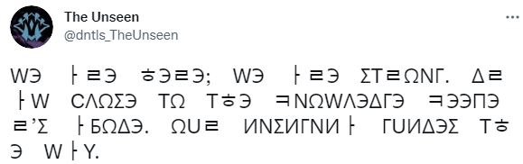
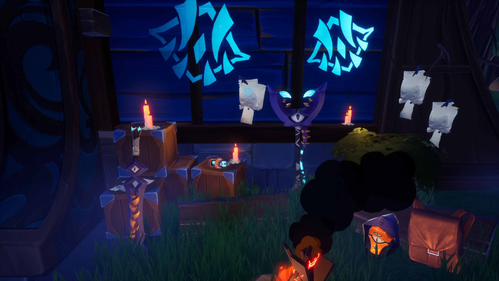
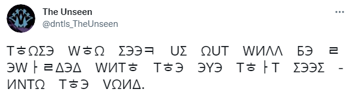
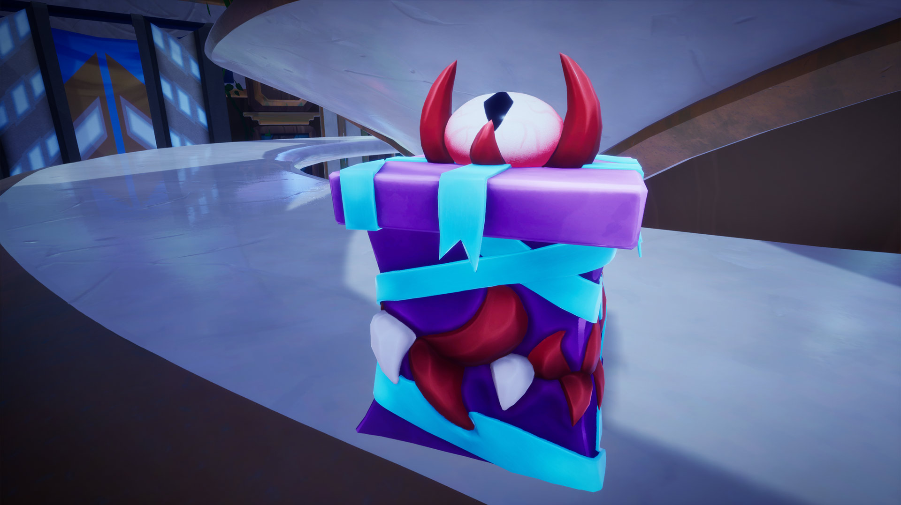
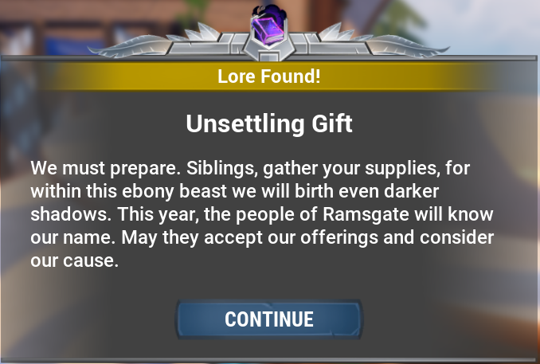
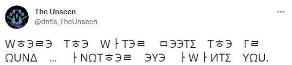
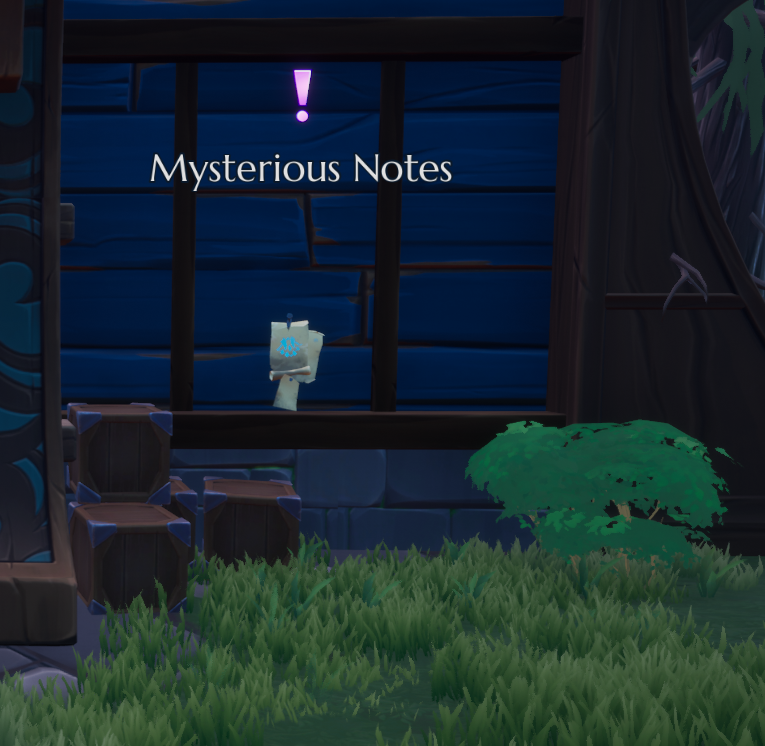
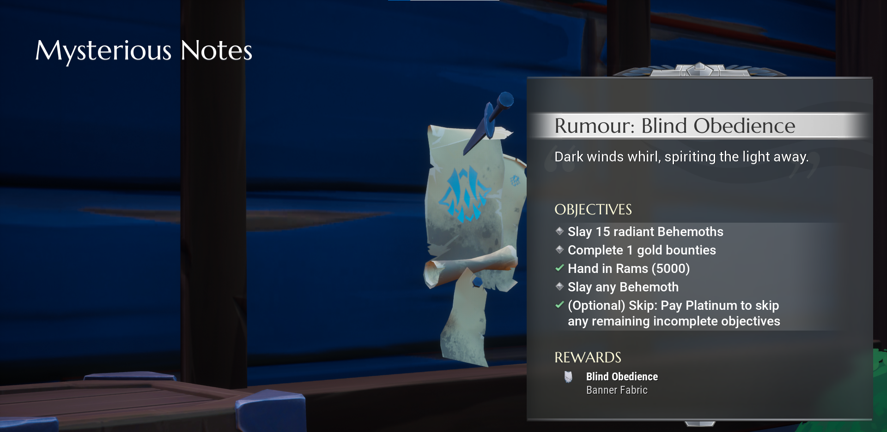
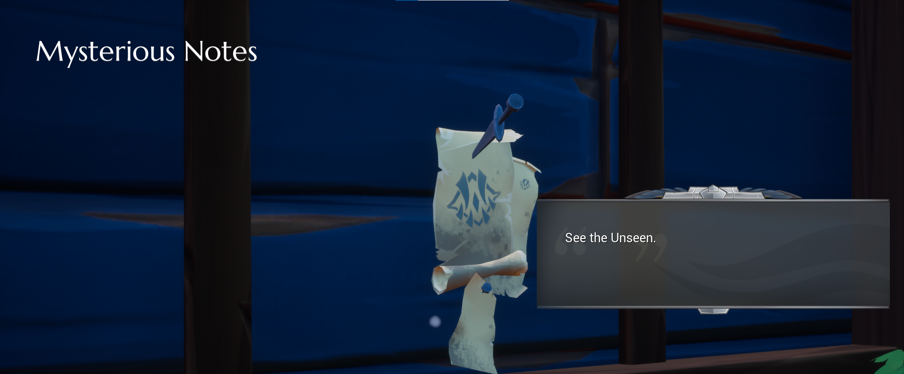

Content
On the 30th of September we got a alert. The Unseen has started to move again. Their twitter became active and they send a tweet. Their first message since last Dark Harvest. With a picture attached to it.
 They posted a cipher too which reads:
WЭ ㅏㄹЭ ㅎЭㄹЭ; WЭ ㅏㄹЭ ΣTㄹΩNΓ. ΔㄹㅏW CΛΩΣЭ TΩ TㅎЭ ㅋNΩWΛЭΔΓЭ ㅋЭЭΠЭㄹ’Σ ㅏБΩΔЭ. ΩUㄹ ИNΣИΓNИㅏ ΓUИΔЭΣ TㅎЭ WㅏY.
When translated this says: We are here; We are strong. Draw close to the knowledge keeper’s abode. Our insignia guides the way.
This message signifies the return once again of the Unseen Cult. They are once again back trying to recruit people to help with their goal of
reaching the doomsday and they want you to know that you have to follow their symbols so reach the truth.
The day after on the 1st of October we got another message from the twitter account.
 They posted a cipher too which reads:
TㅎΩΣЭ WㅎΩ ΣЭЭㅋ UΣ ΩUT WИΛΛ БЭ ㄹЭWㅏㄹΔЭΔ WИTㅎ TㅎЭ ЭYЭ TㅎㅏT ΣЭЭΣ ИNTΩ TㅎЭ VΩИΔ.
When translated this says: Those who seek us out will be rewarded with the eye that sees into the void.
They are now saying that we will be rewarded with the ability to see into the void for those who seek them out. If you look at the picture you can find the location of the
box. It looks like the Vault and Hunt Pass area. When you check that location you can find the box.
And if you go up to it, it will allow you to pick it up and it will then show you this message.
They have called all the dormat cultist. They want them to prepare for the upcoming Dark Harvest. This so called "Ebony Beast" could be refering to the Riftstalker which they summon during the first Dark Harvest or it could be refering to the Shrowd. Since they have been known to make Shrowd effigies in the past. They could also be refering to a new behemoth that we have not seen before. Only time will tell.
The day after we get another tweet.
WㅎЭㄹЭ TㅎЭ WㅏTЭㄹ ㅁЭЭTΣ TㅎЭ ΓㄹΩUNΔ … ㅏNΩTㅎЭㄹ ЭYЭ ㅏWㅏИTΣ YΩU.
When we translate this, it says: Where the water meets the ground … another eye awaits you.
This is telling us where to find the second box. Whihc can be found where water meets the ground. This could be talking about the different areas around
Ramsgate where there are water running. But it is not a waterfall, but rather a little pipe running water. Besides the Ramsgate entrance and close to the Event
guy.
The isles are slowly drifting into their places. The "long night" is refering to the Dark Harvest and it is upon Ramsgate soon. They also want us to know that they are still here. Also after collecting these two boxes it led to a Rumor.
After looking around we found the notes posted by the Unseen. It was found behind Dr. Shaed Priyani house.
This note would give this quest.
 You would be rewarded with the Banner "Blind Obedience"